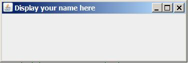

Revised 02/16/26
R. G. Baldwin instructor
A detailed set of instructions is provided in a separate document titled Instructions for Downloading and Submitting Assignments that you can view at the Orientation link in your Blackboard course.
I recommend that you study those instructions very carefully and make yourself a checklist to ensure that you meet all of the requirements before submitting your assignment.
Failure to follow the instructions to the letter usually results in a failing grade, normally zero. The general instructions in that document apply to this assignment. In addition, this document provides specific instructions for the assignment.
If you have any questions regarding instructions, please ask them at least one week prior to the assignment deadline. Don't end up with a bad grade due to the fact that you didn't understand the instructions.
You will find a source code file for the driver class (named Proj05.java) for the program in the same zip file from which you extracted this project specification.
Software version requirements are specified in the syllabus for this course.
Proj05 Copyright 2020 R.G.Baldwin
Among other things, the purpose of this assignment is to assess the student's ability to write a program dealing with JFrame objects, window events, and the Delegation Event Model.
PROGRAM SPECIFICATIONS
Beginning with the file that you downloaded named Proj05.java, create a new file named Proj05Runner.java and any other files that you might need to meet the specifications given below.
Note that you must not modify the code in the file named Proj05.java.
Be sure to display your name in both locations in the output as indicated.
When you place all of the source code files in the same folder, compile them all, and run the file named Proj05.java, the program must display the text shown below on the command line screen.
I certify that this program is my own work and is not the work of others. I agree not to share my solution with others. Replace this line with your name
In addition, your program must display a single 300-pixel by 100-pixel JFrame object as shown in the image below in the upper-left corner of the screen.
When you click the [ _ ] button (the left-most button in the group of 3 buttons in the upper-right corner of the JFrame object), the JFrame object drops into the task bar at the bottom of the Windows screen. (Something comparable must occur for other operating systems.) In addition the following text appears in the command-line window:
Good Night
When you click the icon representing the JFrame object in the system tray (or something comparable in other operating systems), the JFrame object reappears in the upper-left corner of the screen and the following text appears in the command-line window:
Good Morning
When you click the [ X ] button (the right-most button in the group of 3 buttons in the upper-right corner of the JFrame object), the program must terminate and MUST RETURN CONTROL TO THE OPERATING SYSTEM.

The image above displays an empty 300x100 JFrame with the student's name in the banner at the top.
-end-